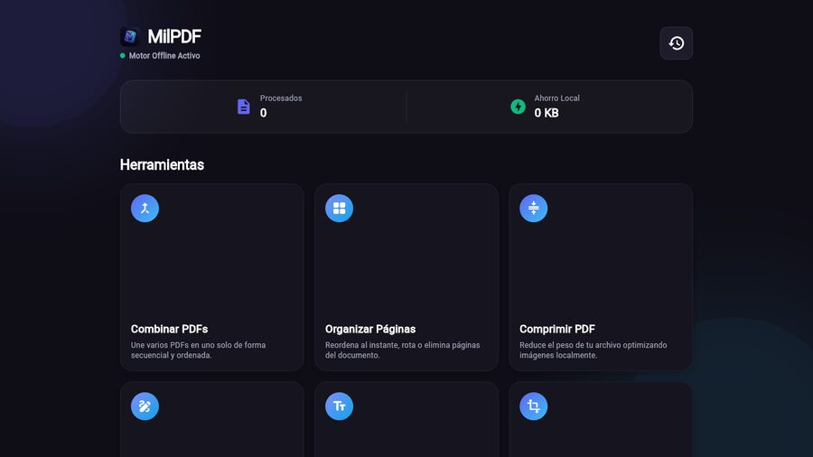
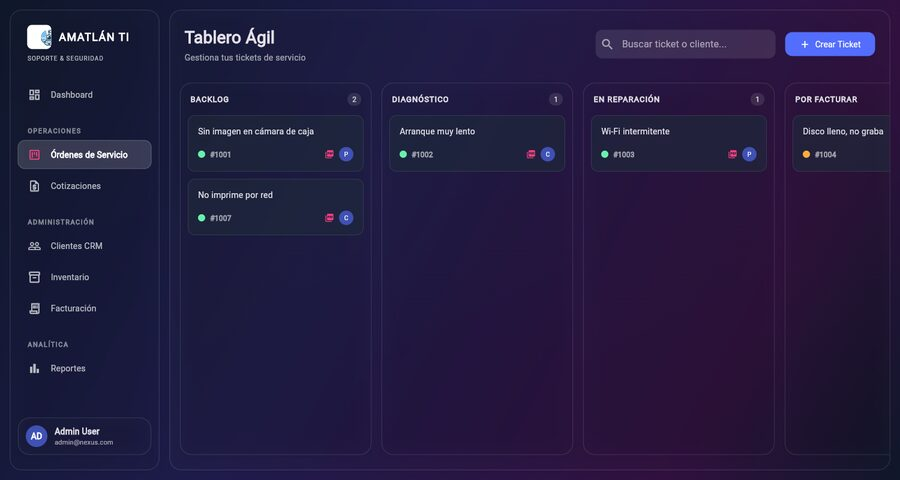
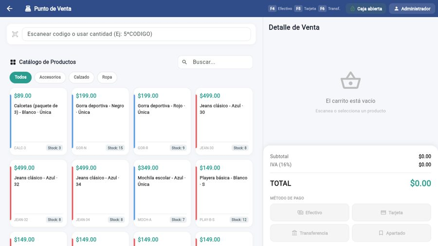

Software que diseñé, construí y mantengo. Las demos funcionan en tu navegador.
Alcance nacional📚
Destacado · Realidad aumentada
Nantlico · Libros de Texto Gratuitos
App de realidad aumentada (modelos 3D, animaciones, audio y video) integrada a los Libros de Texto Gratuitos de la SEP y desplegada a nivel nacional. Estadía profesional 2026 en la UTCV, distribuida por CONALITEG. Resolví el gestor de descargas (asset bundles), implementé la experiencia de RA en la web y validé las versiones APK antes de su distribución.
UnityRealidad aumentadaAsset bundlesAndroidWeb
Demo en vivo
Producto · Herramientas PDF
MilPDF
Combina, reordena, comprime, firma, llena texto y convierte PDFs sin conexión. Todo se procesa en tu navegador o en tu equipo: tus archivos nunca se suben a un servidor.
FlutterDartWebEscritorioPDF
Demo en vivo
Producto · Gestión de negocio
Órdenes de servicio
Sistema para mi negocio de soporte TI: tablero Kanban de órdenes, cotizaciones en PDF, CRM de clientes, inventario, facturación y reportes con gráficas.
FlutterSQLiteKanbanPDFReportes
Demo en vivo
Producto · Restaurante, farmacia y tienda
Milian POS
Punto de venta multipropósito, evolución del sistema que desarrollé para una zapatería con más de 7,200 artículos. Tres enfoques en una sola app: restaurante (mapa de mesas, comandas, división de cuenta, recetas), farmacia (lotes y caducidades) y tienda (apartados y devoluciones). Control de caja, tickets en impresoras térmicas, respaldos y licencias. Versión 2.0 con pruebas automatizadas.
FlutterDrift (SQLite)ESC/POSRestauranteFarmaciaTienda
🧬
Investigación · IA y salud
Skin Spectrum
Detección de anomalías en piel con IA. Modelo de TensorFlow Lite entrenado con más de 6,000 imágenes de una base oncológica internacional: 92% de precisión. Lideré el desarrollo y el aprendizaje automático de un equipo con Scrum y Kanban.
FlutterTensorFlow LiteMachine learningScrum
⚙️
En curso · DevOps
Laboratorio DevOps
Entorno que se reconstruye desde código en unos 4 minutos: redes VPC simuladas en Docker, GitLab, SonarQube, registro de imágenes y runners, con despliegues autenticados por OIDC. El pipeline bloquea dependencias vulnerables y escanea imágenes con Trivy; un tablero con API y una app Flutter con roles permiten operarlo. Más de 250 pruebas automatizadas.
DockerGitLab CISonarQubeTrivyOIDCFlutter
Código no público por ahora
⬇️
Herramienta · Windows
MilDownload
Aplicación de escritorio para Windows con cola de descargas, historial, listas de reproducción, reproductor integrado y ajustes, con interfaz de cristal sobre yt-dlp.
FlutterWindowsyt-dlpmedia_kit
Código privado